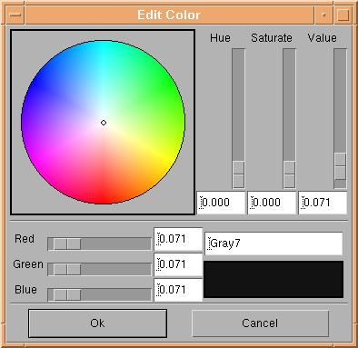

Color selector

The color selector changes a color. The user is able to change slider values, input RGB or HSV values directly, or simply point and click the new color on the color circle.
End of color selector info page.